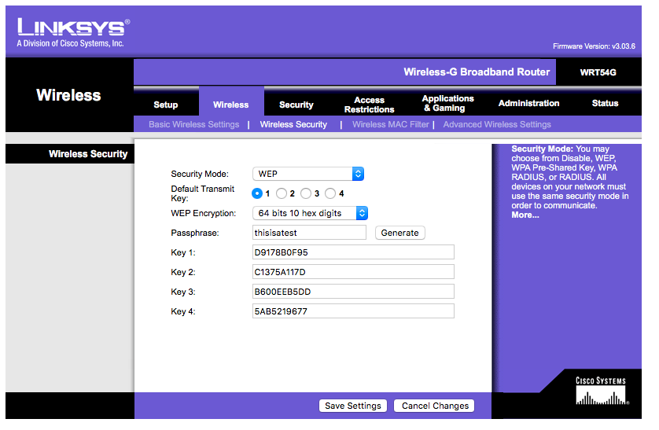
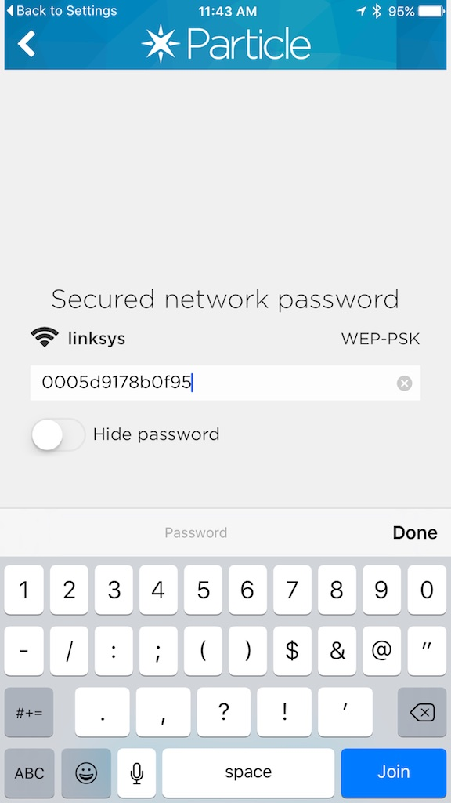
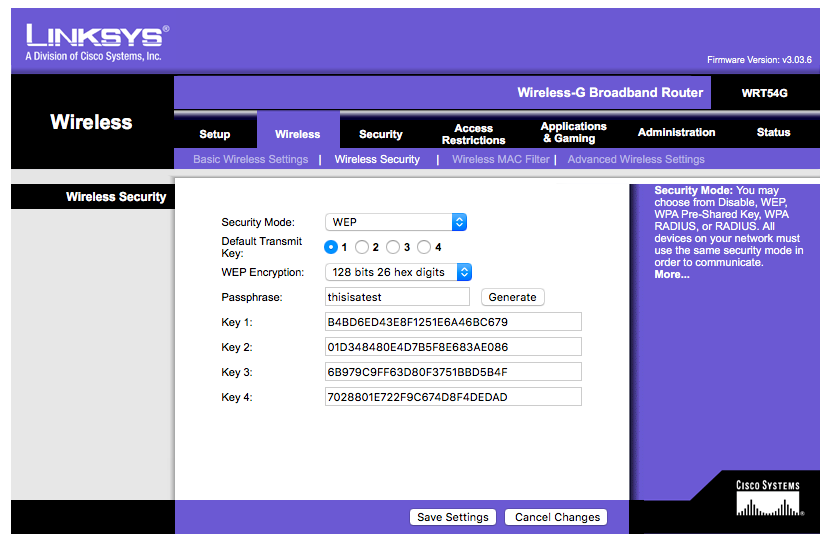

Particle Photon WEP Configuration Tips
First of all, you should not use WEP Wi-Fi encryption!
It's so easily broken into you might as well have an open Wi-Fi network. Also, it's really a pain to configure on the device so you should use WPA2-Personal, instead.
But if for some reason you need to use WEP, here's what you need to do.
Here's a fairly standard configuration screen from a Linksys router:
64-bit hex keys
One common configuration is 64-bit hexadecimal keys. You can tell you have one of these because the key is 10 letters and numbers long and consists only of the characters 0123456789 ABCDEF (the letters could be lowercase abcdef, but usually are not). It's what's pictured in the screenshot above. This is sometimes referred to as 40-bit, as well.
There are always 4 keys, any you can use any one of them, but you need to know which one you are using!
Say you want to use Key 1. You would enter 0005D9178B0F95 as your WEP password. I know, it doesn't make any sense, but that's what you need to do. That's 00 because it's Key 1 and 05 because it's 5 bytes expressed as 10 hexadecimal digits, plus the key D9178B0F95. I told you it was a pain!
The keys are not case-sensitive, so you could enter 0005d9178b0f95 and it would still work, but you absolutely need the 0005 before the key!
Remember these keys are hexadecimal, so it will always be a zero and not a capital O, for example. That does matter.
If you are using the Particle CLI, it would look like this:
$ particle serial wifi ? Should I scan for nearby Wi-Fi networks? Yes ? Select the Wi-Fi network with which you wish to connect your device: linksys ? Should I try to auto-detect the wireless security type? Yes > Detected WEP security ? Wi-Fi Password 0005D9178B0F95 Done! Your device should now restart.
If you were using Key 2, you'd enter: 0105C1375A117D.
If you were using Key 3, you'd enter: 0205B600EEB5DD.
If you were using Key 4, you'd enter: 03055AB5219677.
Of course you'd use your own keys, not the ones here. And this was on a test router. It's no longer using those keys.
128-bit hex keys
Another common configuration is 128-bit hexadecimal keys. You can tell you have one of these because the key is 26 letters and numbers long and consists only of the characters 0123456789 ABCDEF (the letters could be lowercase abcdef, but usually are not). This is sometimes referred to as 104-bit.
If this was your configuration and you were using Key 1, you'd enter 000DB4BD6ED43E8F1251E6A46BC679. That's 00 because it's Key 1 and 0D because the key is 13 = 0x0D (hexadecimal) bytes long, plus the key. You probably don't want to be entering that on your phone!
64-bit ASCII keys
An ASCII 64-bit key is 5 characters long and consists of normal letters, numbers and symbols. Some routers allow you to enter keys in ASCII instead of hex, though the Linksys does not. Allowing this was a horrible idea from a security standpoint.
Enter 5 characters (letters, numbers and symbols) in the text field below, case-sensitive, to get the equivalent hex key:
All of the calculations are done in Javascript in your web browser; your key is not transmitted over the Internet.
128-bit ASCII keys
An ASCII 128-bit key is 13 characters long and consists of normal letters, numbers and symbols. Some routers allow you to enter keys in ASCII instead of hex, though the Linksys does not.
Enter 13 characters (letters, numbers and symbols) in the text field below, case-sensitive, to get the equivalent hex key:
Here's an example of a D-Link router configured with a 128-bit ASCII key 1234567898765. Even though it happens also be hexadecimal, it's 13-characters long, plus the popup is set to ASCII, so it's 128-bit (also known as 104-bit) ASCII.

If your router was configured like that, you'd enter 000D31323334353637383938373635 as your password.
Passphrase
This is not the router password, but the WEP generator passphrase. In the screen above from the Linksys router, it's the string thisisatest. It's used only to generate the keys. You can just enter the keys as they appear above.
This was a bad idea from the start, and it likely will not work with all vendors. But just in case you only have the passphrase and not the individual keys, you can calculate them here; this may or may not work with your router. If you enter thisisatest in the box, you should get the same set of keys in the Linksys screenshots above.
As is the case above, all of the calculations are done in Javascript in your web browser; your passphrase is not transmitted over the Internet. Though you are using a WEP network, so it's inherently insecure anyway.
For 64-bit keys:
Key 1:
Key 2:
Key 3:
Key 4:
For 128-bit keys:
There are three more 128-bit keys, but I can't figure out how to generate them. You only need one, anyway.